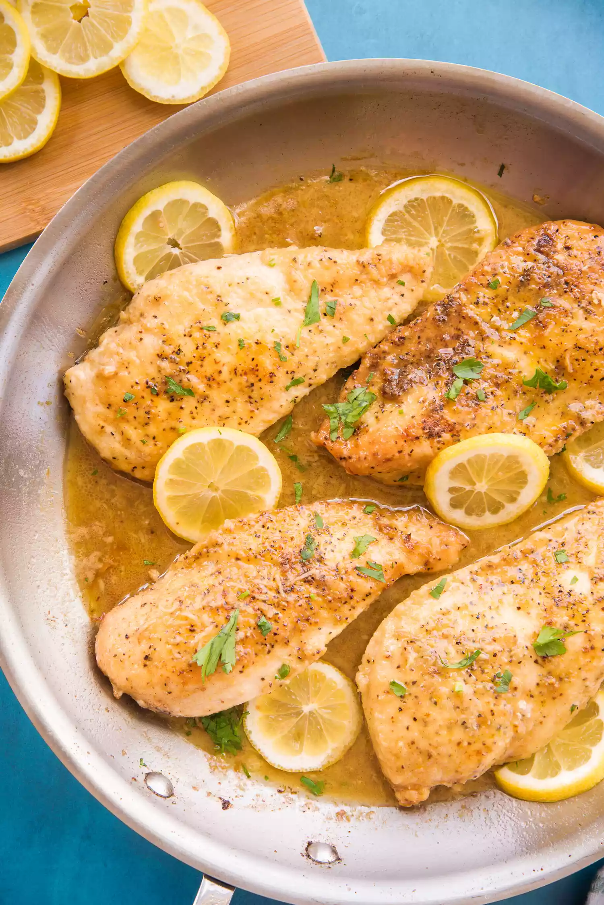

Lemon Pepper Chicken

Ingredients
- 1 1/2 to 1 3/4 pounds boneless, skinless chicken breasts (about 2 large chicken breasts)
- 1 1/2 tablespoons lemon pepper seasoning, divided
- 1/2 teaspoon kosher salt, plus more to taste
- 3/4 cup all-purpose flour
- 1 1/2 tablespoons vegetable oil
- 4 tablespoons unsalted butter, divided
- 2 cloves garlic, minced or grated
- 1/2 cup chicken stock
- 1/3 cup freshly squeezed lemon juice (from 2 lemons)
- 1/4 cup Italian parsley, chopped
- Lemon slices, for garnish (optional)
Wondering how to make this? Here's how.
- Cut the chicken breast into cutlets:
- Place the palm of your hand flat against the top of a whole chicken breast to keep it from sliding around.
- With the broad side of your knife horizontal to the cutting board, cut through the chicken breast to create 2 thinner halves (cutlets).
- Season, then dredge the chicken breasts:
- In a small bowl, combine 4 teaspoons of the lemon pepper seasoning and the salt.
- Add the flour to a separate shallow dish.
- Season both sides of each of the chicken breasts with the spice mixture.
- Dredge both sides of the seasoned chicken in the flour, shaking off any excess flour, then lay the dredged chicken on a wire rack or platter while you heat the pan.
- Pan-fry the chicken:
- In a large skillet, heat the oil and 2 tablespoons of the butter over medium heat.
- Once the butter is melted, swirl the pan a little to combine the two fats.
- Once the oil in the skillet begins to shimmer, lay your chicken cutlets in a single layer in the pan. You may need to fry in batches.
- Make the lemon pepper sauce:
- Melt the butter in the pan over medium heat. Once the butter has melted, add the garlic.
- Sauté the garlic in the butter until fragrant, 30 to 45 seconds.
- Add the chicken stock and lemon juice and deglaze the pan, scraping up any browned bits from the bottom of the pan.
- Allow the liquid in the skillet to come to a boil and continue to boil until very slightly thickened, about 1 minute.
- Coat the chicken:
- Once the sauce has reduced slightly, return the chicken breasts to the pan.
- Turn them over to coat both sides in the sauce and turn the stove off.
- Allow the residual heat from the pan to warm the chicken up before sprinkling the chopped parsley over top.
- Garnish with lemon and serve!
Back to the Top
Back to Homepage